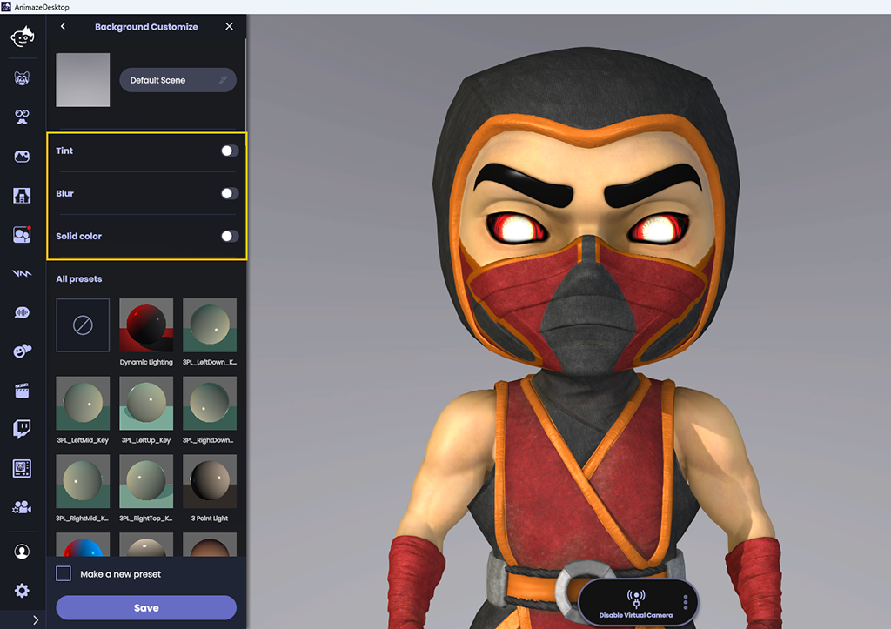
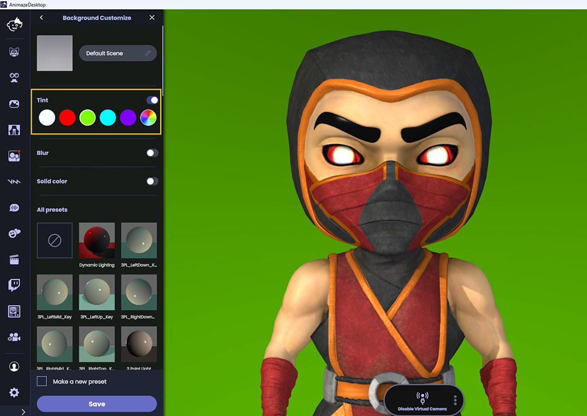
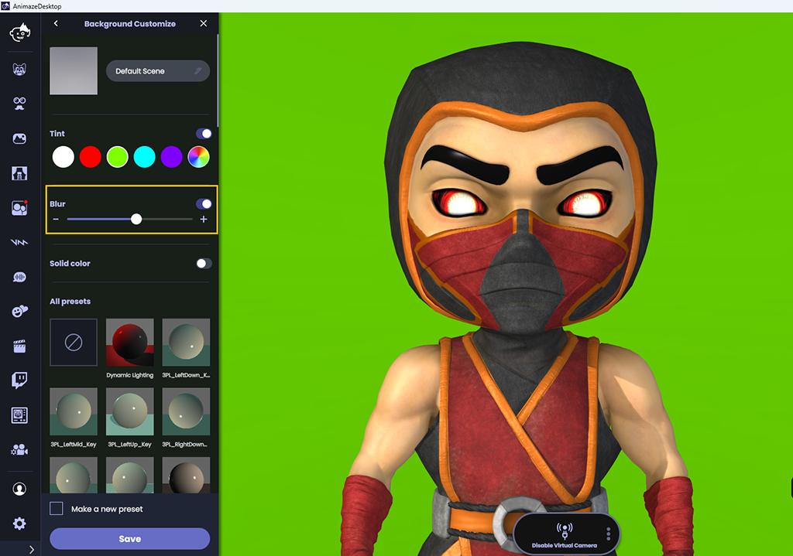
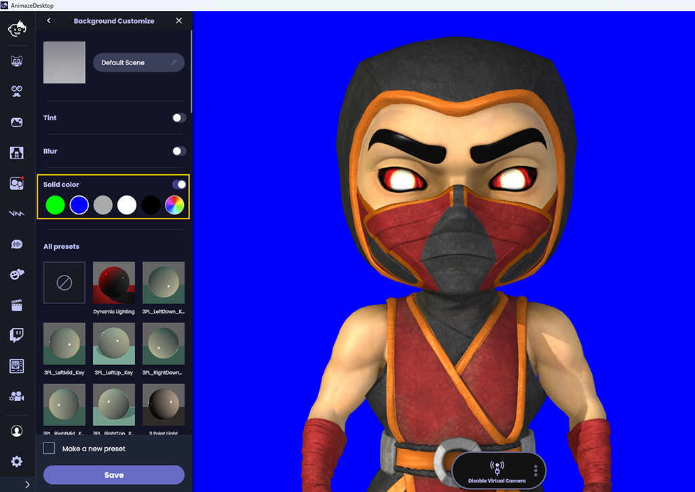
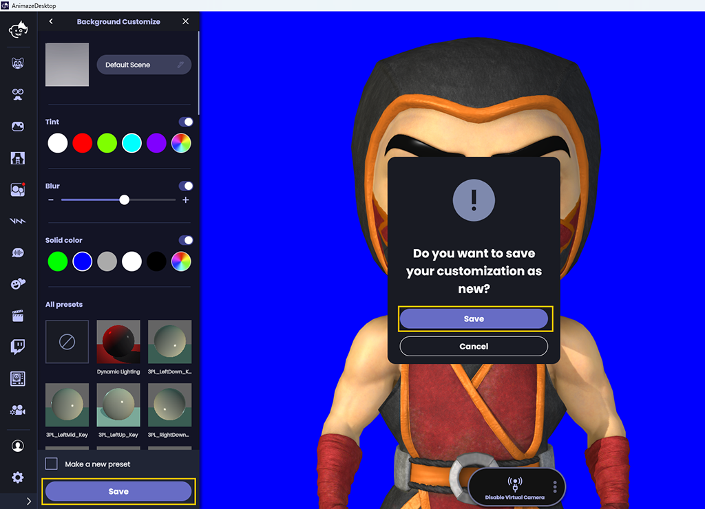

Animaze Desktop: How can I customize my background?
The Animaze app includes the option to customize the lighting in every background. Lighting sets the mood and helps your avatar look cohesive with the background. Use one of seven presets (including Cyberpunk, Hell, or 3 point light) designed by our art team. Or, create your own custom lighting setup with up to four lights.

Lighting presets
To create your own custom lighting effect:
First, hit the Backgrounds button from the left menu. Select your background. Once the background loads, the lighting presets menu automatically opens.

Sample the presets to see which one best suits your avatar scene.

Once you select a preset, you can further customize to change the lights’ colors and intensities.

Finish the customization by hitting the save button.
When you find your perfect lighting customization, you can check the “Make a new preset” option in to have your Animaze app open to your preferred background lighting.
You can further customize backgrounds in Animaze with options like Tint, Blur, and Solid color.
Tint: allows you to tint the background with a color of your choice
Blur: blurs the background, allowing you to create a shallow depth of field in your scene
Solid color: change the background image with a solid color of your choice

-
Once the Background Customize drawer menu loads, click the toggle button next to Tint to turn this option ON and see the color picker.
-
Click any of the available colors, or choose a color through the color picker.

-
Toggle on Blur to reveal the blur slider.
-
Use the slider to set the amount of blur.

-
Click the toggle button next to Solid color to turn this option ON and see the color picker.
-
Choose any of the available color options, or choose one through the color picker.

-
Click on Save to save the changes that you made.
